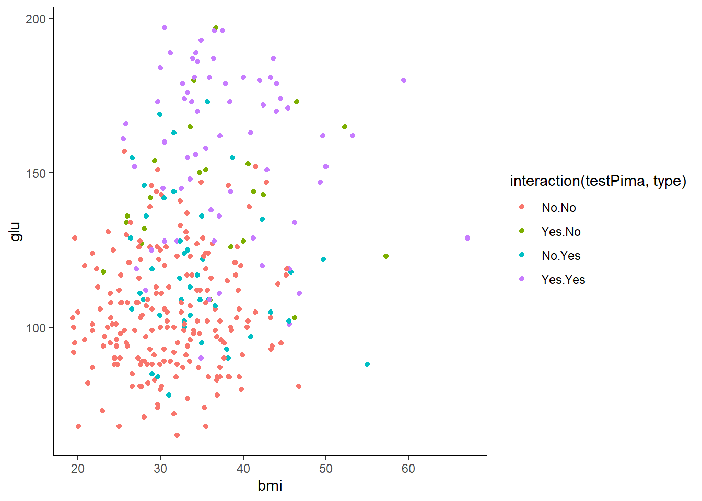
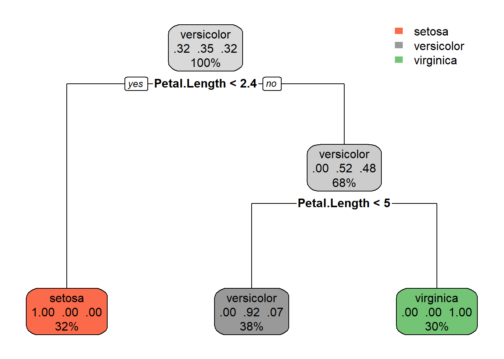
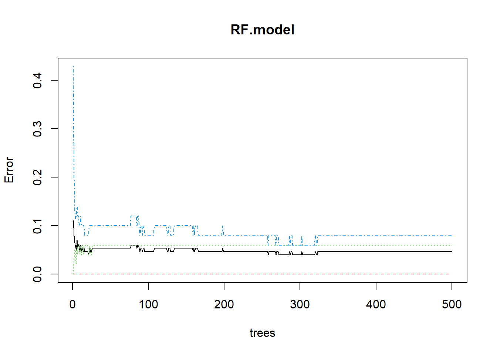
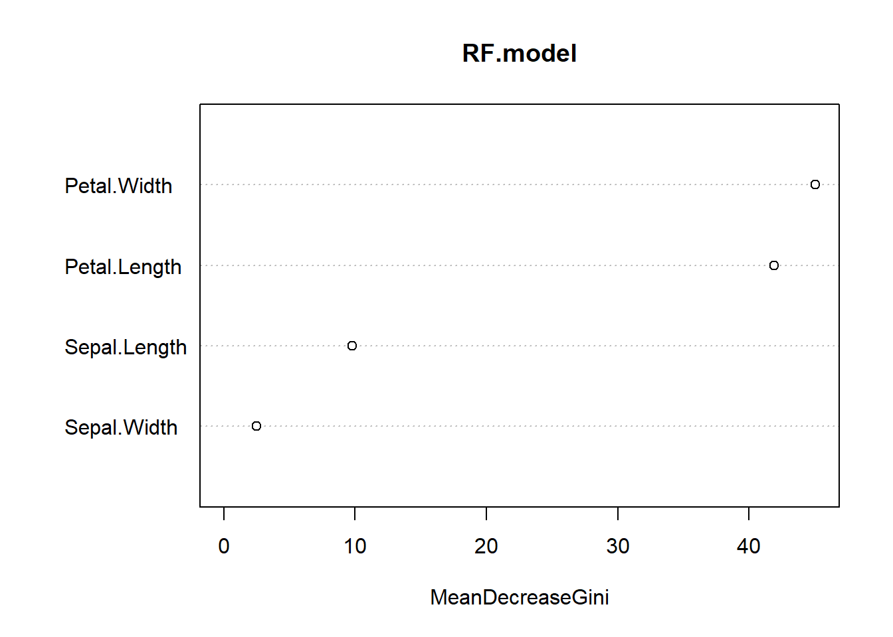
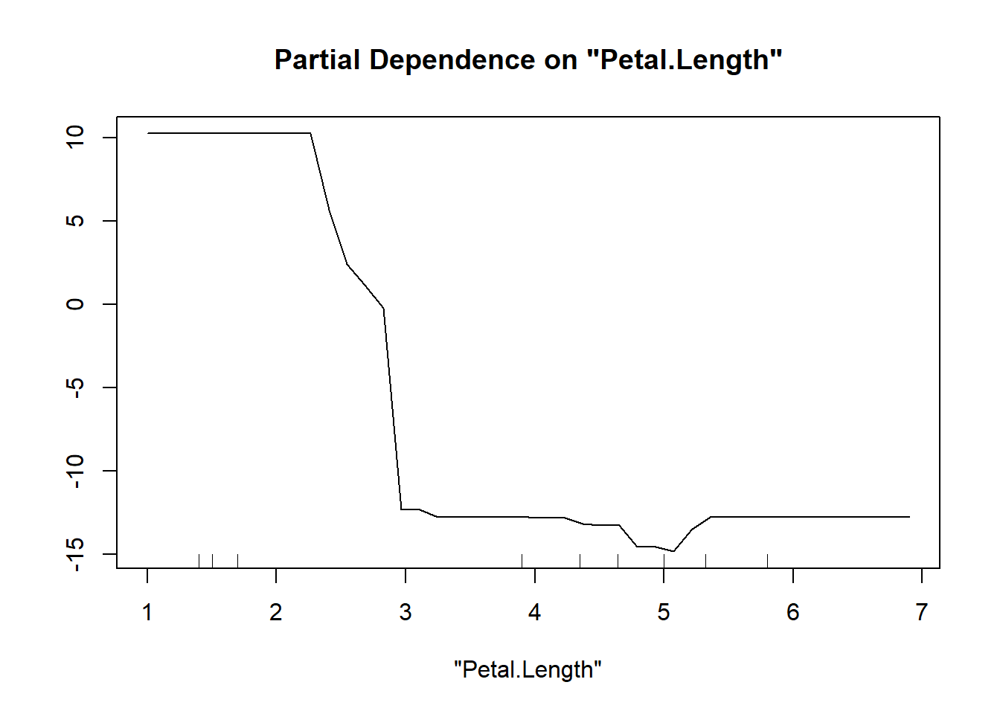

7 Classification
Classification is the task of assigning data objects, such as sites, species or images to predetermined classes. Determining what class of data object you have is a question that usually turns on multiple predictors. For example, to classify leaf images to different species predictors such as size, shape and colour may be used. you have sattelite data, you may need to classify the differnt pixels of the image as agricultural, forest, or urban. So for classifcation tasks our response variabel, y, is qualitative or categorical (e.g. gender).
There are many methods that can be employed for this task ranging from logistic regression to random forest techqniques. While some of these methods are classic multivariate methods, others, like random forest classifiers, are machine learning tasks. Machine learning is an application of artificial intelligence. The computer algorithm finds a solution to the classifcation problem without being explicitly programmed to do so.
7.1 Multivariate logistic regression
On of the simplest classification methods is to use logistic regression. Let’s take a simple, but common example. A non-native species has been introduced to a region, and we would like to know what percentage of the region would be suitable habitat, in order to get an idea of risks of impact. We’ll start with a univariate version of the problem. Let’s assume we think that average temperature controls habitat suitability, and we have presencce absence data for the species accross a range of different sites. Could we use simple regression to answer the question of whether a given area is suitable habitat?

Figure 7.1: Species presence absence and rainfall
As we can see in Fig. @ref{fig:log}, the linear regression does not make a lot of sense for a response variable that is restricted to the values of 0 and 1. The regression line \(\beta_0+\beta_1x\) can take on any value between negative and positive infinity, but we don’t know how to interpret values greater than 1 or less than zero. The regression line almost always predicts wrong value for y in classification problems.
Instead of trying to predict y, we can try to predict p(y = 1), i.e., the probability that a species is in an area. We need a function that gives outputs between 0 and 1: logistic regression is one solution. In this model, probability of y for a given value of x, p(x) is given as: \[\frac{e^{\beta_0+\beta_1x}}{1+e^{\beta_0+\beta_1x}}\]. Rearranging, we have: \[\frac{p(x)}{1-p(x)}=e^{\beta_0+\beta_1x},\] where the lefthand side is called the log-odds or logit. We can see that the logistic regression model has a logit that is linear in x: \[\log{\frac{p(x)}{1-p(x)}}=e^{\beta_0+\beta_1x}\]. The logistic function will always produce an S-shaped curve, so regardless of the value of x, we will obtain a sensible prediction.
Let’s apply this model to our non native species data.
1 2 3 4 5 6
0.04112748 0.04458053 0.04533242 0.05951435 0.20909427 0.67290516 
7.2 Exercise: Logistic regression as a classifier
We’ll start by installing the MASS package, and then the the Pima.tr data in the MASS package, since there is a binary response. Install the MASS package, load the library and load the data. Type help(Pima.tr) or ?Pima.tr to get a description of these data. You’ll notice that the “type” variable is our classifier and determines whether the patient has diabetes or not.
Next construct a logistic regression, to use as a classifier. Examine your output, to determine if the regression is significant
'data.frame': 200 obs. of 8 variables:
$ npreg: int 5 7 5 0 0 5 3 1 3 2 ...
$ glu : int 86 195 77 165 107 97 83 193 142 128 ...
$ bp : int 68 70 82 76 60 76 58 50 80 78 ...
$ skin : int 28 33 41 43 25 27 31 16 15 37 ...
$ bmi : num 30.2 25.1 35.8 47.9 26.4 35.6 34.3 25.9 32.4 43.3 ...
$ ped : num 0.364 0.163 0.156 0.259 0.133 ...
$ age : int 24 55 35 26 23 52 25 24 63 31 ...
$ type : Factor w/ 2 levels "No","Yes": 1 2 1 1 1 2 1 1 1 2 ...
Call:
glm(formula = type ~ ., family = binomial, data = Pima.tr)
Deviance Residuals:
Min 1Q Median 3Q Max
-1.9830 -0.6773 -0.3681 0.6439 2.3154
Coefficients:
Estimate Std. Error z value Pr(>|z|)
(Intercept) -9.773062 1.770386 -5.520 3.38e-08 ***
npreg 0.103183 0.064694 1.595 0.11073
glu 0.032117 0.006787 4.732 2.22e-06 ***
bp -0.004768 0.018541 -0.257 0.79707
skin -0.001917 0.022500 -0.085 0.93211
bmi 0.083624 0.042827 1.953 0.05087 .
ped 1.820410 0.665514 2.735 0.00623 **
age 0.041184 0.022091 1.864 0.06228 .
---
Signif. codes: 0 '***' 0.001 '**' 0.01 '*' 0.05 '.' 0.1 ' ' 1
(Dispersion parameter for binomial family taken to be 1)
Null deviance: 256.41 on 199 degrees of freedom
Residual deviance: 178.39 on 192 degrees of freedom
AIC: 194.39
Number of Fisher Scoring iterations: 5The . in the formula argument means that we use all the remaining variables in data as covariates. Note: we used the glm() function to perform logistic regression by passing in the family=“binomial” argument. But if we use glm() to fit a model without passing in the family argument, then it performs linear regression, just like the lm() function.
Next, we’ll use some testing data, to test our classifier. The Prima.te has already been created for you in the MASS package. We’ll use the predict function to get a classification of the data.
Note that the output is a probability. To complete the classification we need to make a decision about where to divide up the classes. Let’s just use a 50% probability, and then construct a confusion matrix to determine how well our predictor did.
Predicted
Actual No Yes
No 200 23
Yes 43 66[1] 0.8012048Notice there there have been some missclassifications at 50%, and that the accuracy is only about 80%. See if another decision boundary (e.g., 75%) does any better.
There is a nice package in R, caret, that is a great wrapper for machine learning tasks. We can use it to generate both our confusion matrix, and other statistical info about our classifier
Confusion Matrix and Statistics
Reference
Prediction No Yes
No 200 23
Yes 43 66
Accuracy : 0.8012
95% CI : (0.7542, 0.8428)
No Information Rate : 0.7319
P-Value [Acc > NIR] : 0.002095
Kappa : 0.5271
Mcnemar's Test P-Value : 0.019349
Sensitivity : 0.8230
Specificity : 0.7416
Pos Pred Value : 0.8969
Neg Pred Value : 0.6055
Prevalence : 0.7319
Detection Rate : 0.6024
Detection Prevalence : 0.6717
Balanced Accuracy : 0.7823
'Positive' Class : No
Perhaps the most informative of these stats is the No Information Rate which tests whether our classifier does better than random assignment. Also the balanced accuracy stat, gives an accuracy value that weights both majority and minority classes evenly, if you have unbalanced membership.
Finally, you may want to visualize your classfier results. A simple way is to code the colours and symbols. Let’s use the ggplot() system since it has a nice method for dealing with two different categorical objects (although in other respects is has a cryptic interface!).

##LDA
7.2.1 Classification trees
Classification trees also output the predicted class for a given sample. Let’s try this on the iris data. We’ll first split the data into a training and testing set, using a built in function in the caret library. And then run our tree algorithm in the rpart package.
n= 105
node), split, n, loss, yval, (yprob)
* denotes terminal node
1) root 105 68 versicolor (0.3238095 0.3523810 0.3238095)
2) Petal.Length< 2.35 34 0 setosa (1.0000000 0.0000000 0.0000000) *
3) Petal.Length>=2.35 71 34 versicolor (0.0000000 0.5211268 0.4788732)
6) Petal.Length< 4.95 40 3 versicolor (0.0000000 0.9250000 0.0750000) *
7) Petal.Length>=4.95 31 0 virginica (0.0000000 0.0000000 1.0000000) *Examine the output, and then try to plot it


Finally, using this tree classifer, we can make predictions for our testing data, and get a confusion matrix
Confusion Matrix and Statistics
Reference
Prediction setosa versicolor virginica
setosa 16 0 0
versicolor 0 11 3
virginica 0 2 13
Overall Statistics
Accuracy : 0.8889
95% CI : (0.7595, 0.9629)
No Information Rate : 0.3556
P-Value [Acc > NIR] : 1.581e-13
Kappa : 0.833
Mcnemar's Test P-Value : NA
Statistics by Class:
Class: setosa Class: versicolor Class: virginica
Sensitivity 1.0000 0.8462 0.8125
Specificity 1.0000 0.9062 0.9310
Pos Pred Value 1.0000 0.7857 0.8667
Neg Pred Value 1.0000 0.9355 0.9000
Prevalence 0.3556 0.2889 0.3556
Detection Rate 0.3556 0.2444 0.2889
Detection Prevalence 0.3556 0.3111 0.3333
Balanced Accuracy 1.0000 0.8762 0.87187.2.2 Random Forests
Let’s try an ensemble decision tree on the iris data. We use the randomForest package on the training data. Note that we do not have to split our data into training and testing now, random Forest is already doing this sort of thing for us.
Call:
randomForest(formula = Species ~ ., data = iris)
Type of random forest: classification
Number of trees: 500
No. of variables tried at each split: 2
OOB estimate of error rate: 4.67%
Confusion matrix:
setosa versicolor virginica class.error
setosa 50 0 0 0.00
versicolor 0 47 3 0.06
virginica 0 4 46 0.08Our classification is pretty good with a misclassification rate of only 4%. We might like to looks at what the model is doing but unlike a single CART, random forests do not produce a single visual, since of course the predictions are averaged across many hundreds or thousands of trees.

The plot shows how the Out Of Bag error rate (proportion of misclassifications) for each of the three species changes with the size of the forest (the number of trees). Obviously with few trees the error rate is high, but as more trees are added you can see the error rate decrease and eventually flatten out.
When building random forests, there are three tuning parameters of interest: node size, number of trees, and number of predictors sampled at each split. Careful tuning of these parameters can prevent extended computations with little gain in error reduction. For example, in the above plot, we could easily reduce the number of trees down to 300 and experience relatively little loss in predictive ability:
Call:
randomForest(formula = Species ~ ., data = iris, ntree = 300)
Type of random forest: classification
Number of trees: 300
No. of variables tried at each split: 2
OOB estimate of error rate: 4.67%
Confusion matrix:
setosa versicolor virginica class.error
setosa 50 0 0 0.00
versicolor 0 47 3 0.06
virginica 0 4 46 0.08So we see an increase in our error rate, but not much.
Despite not yielding a single visualizable tree, one of the major advantages of random forests is that they can provide a measure of relative importance. By ranking predictors based on how much they influence the response, RFs may be a useful tool for whittling down predictors before trying another framework, such as CART of linear models. Importance can be obtained using the importance function, and plotted using the varImpPlotfunction:

The table reports the mean decrease in the Gini Index, which if you recall, is a measure of impurity for categorical data. For each tree, each predictor in the OOB sample is randomly permuted (aka, shuffled around) and passed to the tree to obtain the error rate (again, Gini index for categorical data, MSE for continuous). The error rate from the unpermuted OOB is then subtracted from the error rate on the permuted OOB data, and averaged across all trees. When this value is large, it implies that a variable had a strong relationship with the response (aka, the model got much worse at predicting the data when that variable was permuted). The plot communicates the same data as in the table, with points farther along the x-axis deemed more important. As we already knew, Petal.Length and Petal.Width are the two most important variables.
One other useful aspect of random forests is getting a sense of the partial effect of each predictor given the other predictors in the model. (This has analogues to partial correlation plots in linear models.) This is done by holding each value of the predictor of interest constant (while allowing all other predictors to vary at their original values), passing it through the RF, and predicting the responses. The average of the predicted responses are plotted against each value of the predictor of interest (the ones that were held constant) to see how the effect of that predictor changes based on its value. This exercise can be repeated for all other predictors to gain a sense of their partial effects.
The function to calculate partial effects is partialPlot. Let’s look at the effect of Petal.Length: 
The y-axis is a bit tricky to interpret. Since we are dealing with classification trees, its on the logit scale, so its the probability of success. In this case, the partial plot has defaulted to the first class, which represents I. setosa. This plot says that there is a high chance of successfully predicting this species from Petal.Length when Petal.Length is less than around 2.5 cm, after which point the chance of successful prediction drops off precipitously. This is actually quite reassuring as this is the first split identified way back in the very first CART (where the split was < 2.45 cm).
Missing data Its worth noting that the default behavior of randomForest is to refuse to fit trees with missing predictors. You can, however, specify a few alternative arguments: the first is na.action = na.omit, which removes the ros with missing values outright. Another option is to use na.action = na.roughfix, which replaces missing values with the median (for continuous variables) or the most frequent level (for categorical variables). Missing responses are harder: you can either remove that row, or use the function rfImpute to impute values. The imputed values are the average of the non-missing observations, weighted by their proximity to non-missing observations (based on how often they fall in terminal nodes with those observations). rfImpute tends to give optimistic estimates of the OOB error.